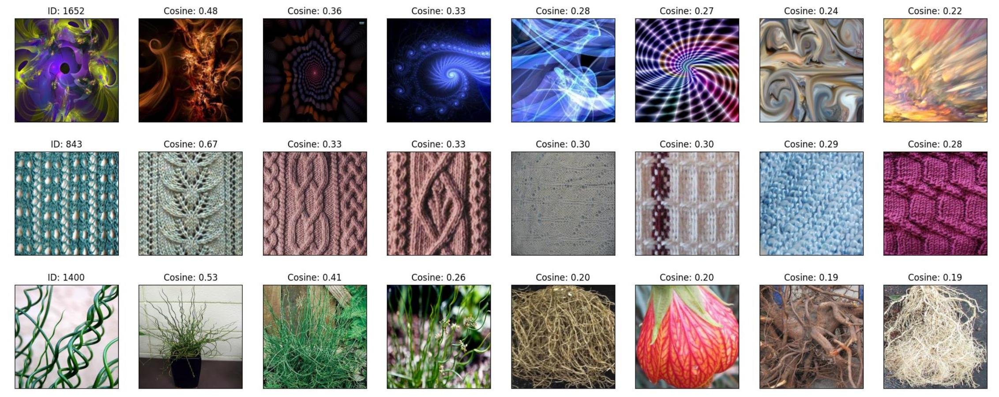

The model unicom was pre-trained on laion400M, and in the future, we will release the model trained on laion2B.
Usage
First, install PyTorch 2.0 (or later) and torchvision, as well as small additional dependencies, and then install this repo as a Python package. On a CUDA GPU machine, the following will do the trick:
pip install torch torchvision
pip install tqdm timm
git clone https://github.com/deepglint/unicom
cd unicom
python
>>> import unicom
>>> unicom.available_models()
['ViT-B/32', 'ViT-B/16', 'ViT-L/14', 'ViT-L/14@336px']
>>> unicom.load('ViT-B/32')
1%|▍ | 4.53M/385M [00:27<50:34, 132kiB/s]
API
The unicom module provides the following methods:
unicom.available_models()
Returns the names of the available unicom models.
unicom.load(name)
Returns the model and the TorchVision transform needed by the model, specified by the model name returned by unicom.available_models(). It will download the model as necessary.
Results and Evaluation
Result Transfer-Learning on ImageNet1K
Dataset |
ViT-B/32@384px |
ViT-B/16@384px |
ViT-L/14@518px |
|---|---|---|---|
ImageNet1k |
83.6 |
85.9 |
88.3 |
Result KNN on ImageNet1K
Dataset |
ViT-B/32 |
ViT-B/16 |
ViT-L/14 |
ViT-L/14@336px |
|---|---|---|---|---|
ImageNet1K |
74.5 |
78.8 |
81.2 |
81.6 |
Result of Supervised Image Retrieval
Dataset |
ViT-B/32 |
ViT-B/16 |
ViT-L/14 |
ViT-L/14@336px |
|---|---|---|---|---|
SOP |
87.1 |
88.8 |
89.9 |
91.2 |
In-Shop |
94.8 |
95.5 |
96.0 |
96.7 |
INaturalist |
72.8 |
82.5 |
85.4 |
88.9 |
Result of Zero-Shot Image Retrieval
Dataset |
ViT-B/32 |
ViT-B/16 |
ViT-L/14 |
ViT-L/14@336px |
|---|---|---|---|---|
CUB |
83.7 |
86.5 |
88.5 |
89.2 |
Cars |
95.9 |
96.8 |
96.9 |
97.3 |
SOP |
70.0 |
70.4 |
72.7 |
74.5 |
In-Shop |
72.8 |
74.6 |
83.6 |
86.7 |
INaturalist |
64.6 |
73.6 |
77.1 |
81.0 |
Eval Image Retrieval
Zero-Shot CUB Dataset with a Single GPU.
torchrun retrieval.py --eval --dataset cub --model_name ViT-B/32
Zero-Shot CUB Dataset with 8 GPUs.
torchrun --nproc_per_node 8 retrieval.py --eval --dataset cub --model_name ViT-B/32
Eval KNN
torchrun --nproc_per_node 8 knn.py --train-dataset /imagenet/train/ --val-dataset /imagenet/val/ --num-workers 4 --model-name ViT-B/32
Vis ZeroShot Retrieval
1. Food-101

2. Describable Textures Dataset

GoogleLandmark
GoogleLandmark Dataset Performance
Model |
Public |
Private |
Google Drive |
|---|---|---|---|
UNICOM-ViT-B/16@512px |
32.4 |
35.7 |
|
UNICOM-ViT-L/14@512px |
33.1 |
36.4 |
Training Instructions
To successfully train the ViT-L/14 model on the GoogleLandmark dataset, ensure you have access to an NVIDIA A100 GPU with 80GB of memory and PyTorch version 2.0 or higher. Follow these detailed instructions:
Download the Dataset: Obtain the GoogleLandmark dataset and ensure it is stored in a directory accessible to your training environment.
Create the Rec Package: Use the following commands to convert the dataset into a format suitable for training. Replace GLDv2_PATH with the actual path to your dataset:
python convert_google_landmark2dali.py GLDv2_PATH/train_clean.csv train.lst
python -m mxnet.tools.im2rec --quality 100 --num-thread 32 --resize 672 train.lst GLDv2_PATH
The first command generates a list file (train.lst) from the CSV file, which describes the dataset.
The second command converts images to the RecordIO format with specified image quality and size, utilizing multiple threads for efficiency.
After preparing the dataset, you can start training the model with the following command:
torchrun --nproc_per_node 8 finetune_GLDv2.py
Citation
@inproceedings{anxiang_2024_mlcd,
title={Multi-label Cluster Discrimination for Visual Representation Learning},
author={An, Xiang and Yang, Kaicheng and Dai, Xiangzi and Feng, Ziyong and Deng, Jiankang},
booktitle={ECCV},
year={2024}
}
@inproceedings{anxiang_2023_unicom,
title={Unicom: Universal and Compact Representation Learning for Image Retrieval},
author={An, Xiang and Deng, Jiankang and Yang, Kaicheng and Li, Jiawei and Feng, Ziyong and Guo, Jia and Yang, Jing and Liu, Tongliang},
booktitle={ICLR},
year={2023}
}
@inproceedings{anxiang_2022_partialfc,
author={An, Xiang and Deng, Jiankang and Guo, Jia and Feng, Ziyong and Zhu, XuHan and Yang, Jing and Liu, Tongliang},
title={Killing Two Birds With One Stone: Efficient and Robust Training of Face Recognition CNNs by Partial FC},
booktitle={CVPR},
year={2022},
}
@inproceedings{deng_2019_arcface,
title={Arcface: Additive angular margin loss for deep face recognition},
author={Deng, Jiankang and Guo, Jia and Xue, Niannan and Zafeiriou, Stefanos},
booktitle={CVPR},
year={2019}
}